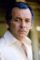
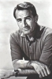

Country:United States, 75 minutes
Spoken languages:
Genres:Horror, Mystery, Thriller, Sci-Fi
Director(s):Daniel Petrie
Writer(s):Les Whitten
Video Codec:Unknown
Number: 1502


Certification:NR
Storyline:
After several locals are viciously murdered, a Louisiana sheriff starts to suspect he may be dealing with a werewolf.
Cast:  


Medium: Original DVD,
Comments: Part of: Sci-Fi Classics - 50 Movies
Loaned: No
Aspect ratio: Unknown